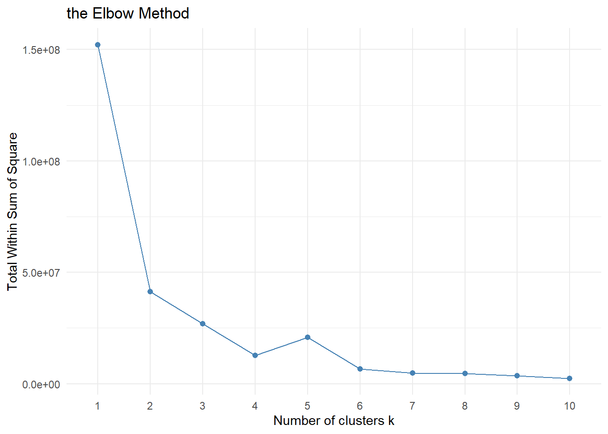
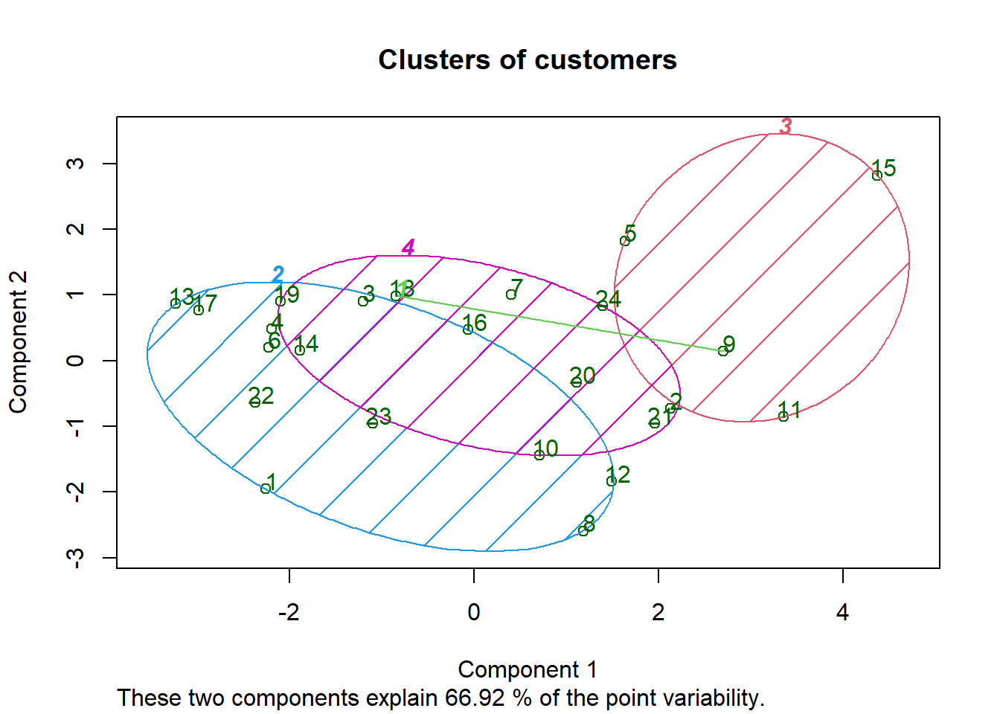
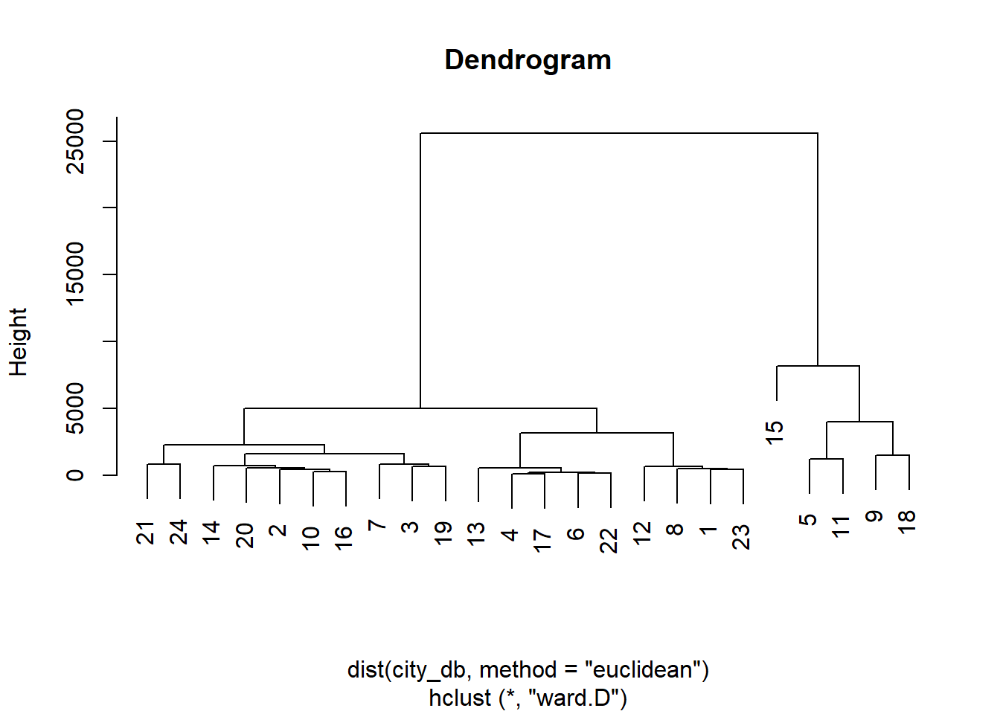
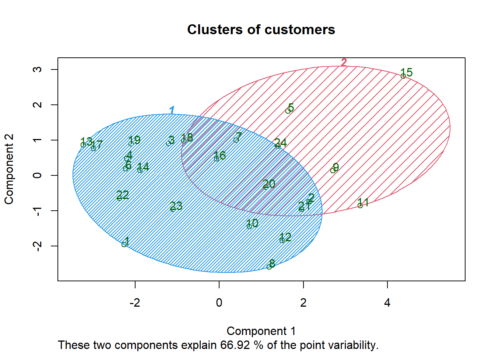

Clustering is a broad set of techniques for finding subgroups of observations within a data set. When we cluster observations, we want observations in the same group to be similar and observations in different groups to be dissimilar. Because there isn’t a response variable, this is an unsupervised method, which implies that it seeks to find relationships between the n observations without being trained by a response variable. Clustering allows us to identify which observations are alike, and potentially categorize them therein. K-means clustering is the simplest and the most commonly used clustering method for splitting a dataset into a set of k groups.
We use to illustrate our code with the Hartigan (1975) City Crime database from Hartigan, J. A. (1975). Clustering Algorithms, John Wiley, New York.
library(cluster.datasets)
data(all.us.city.crime.1970)
head(all.us.city.crime.1970,10)## city population white.change black.population murder rape robbery
## 1 Anaheim 1420 50.8 39 2.7 21.9 94
## 2 Baltimore 2071 -21.4 501 13.2 34.9 564
## 3 Boston 2754 -16.5 151 4.4 14.8 136
## 4 Buffalo 1349 -20.7 118 5.7 13.7 145
## 5 Chicago 6979 -18.6 1306 12.9 25.4 363
## 6 Cincinnatti 1385 -17.2 156 6.4 16.8 120
## 7 Cleveland 2064 -26.5 343 14.5 18.7 288
## 8 Dallas 1556 14.2 261 18.4 41.0 206
## 9 Detroit 4200 -29.1 780 14.7 31.1 649
## 10 Houston 1985 25.5 399 16.9 27.1 335
## assault burglary car.theft
## 1 103 1607 377
## 2 396 1351 701
## 3 95 1054 984
## 4 111 862 448
## 5 233 830 708
## 6 107 912 348
## 7 132 826 1208
## 8 338 1581 577
## 9 223 1986 758
## 10 183 1532 741city_db <- all.us.city.crime.1970[-1]##We use the elbow method to find the optimal number of clusters
library(factoextra)## Welcome! Want to learn more? See two factoextra-related books at https://goo.gl/ve3WBafviz_nbclust(city_db, kmeans, method = "wss", k.max = 10) + theme_minimal() + ggtitle("the Elbow Method")
The Elbow Curve method is helpful because it shows how increasing the number of the clusters contribute separating the clusters in a meaningful way, not in a marginal way. The bend indicates that additional clusters beyond the fourth have little value.
kmeans = kmeans(x = city_db, centers = 4)
y_kmeans = kmeans$clusterlibrary(cluster)
clusplot(city_db,
y_kmeans,
lines = 0,
shade = TRUE,
color = TRUE,
labels = 2,
plotchar = FALSE,
span = TRUE,
main = paste('Clusters of customers'))
Hierarchical clustering is an alternative approach to k-means clustering for identifying groups in the dataset. It does not require us to pre-specify the number of clusters to be generated as is required by the k-means approach. Furthermore, hierarchical clustering has an added advantage over K-means clustering in that it results in an attractive tree-based representation of the observations, called a dendrogram.
dendrogram = hclust(d = dist(city_db, method = 'euclidean'), method = 'ward.D')
plot(dendrogram,
main = paste('Dendrogram'))
hc = hclust(d = dist(city_db, method = 'euclidean'), method = 'ward.D')
y_hc = cutree(hc, 2)library(cluster)
clusplot(city_db,
y_hc,
lines = 0,
shade = TRUE,
color = TRUE,
labels= 2,
plotchar = FALSE,
span = TRUE,
main = paste('Clusters of customers'))